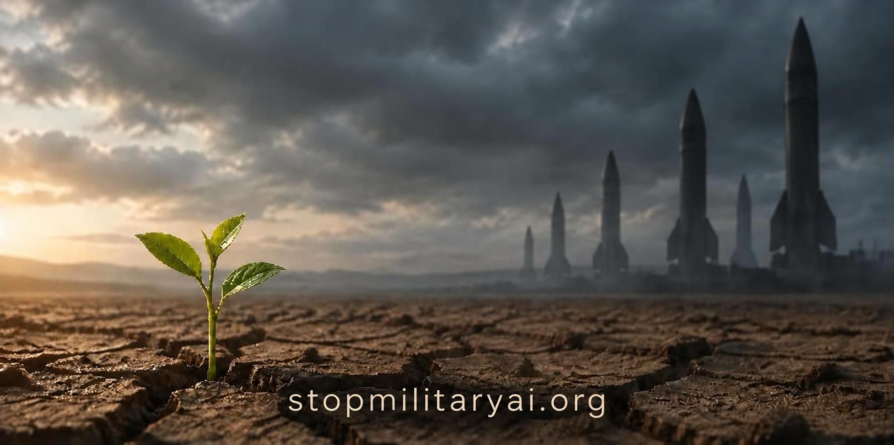

Global risk
Nuclear Weapons: The Risk of Unacceptable Global Harm
A nuclear exchange would cause immediate mass casualties, long-term environmental damage, and deep disruption to food systems, health systems, and global stability.

The scale of the risk
Nuclear weapons remain among the most destructive technologies ever created. Even a limited exchange could kill large numbers of people, injure many more, and overwhelm emergency response systems. The effects would not stop at the blast zones.
Humanitarian consequences
Beyond the immediate destruction, nuclear detonations can cause fires, radiation exposure, widespread displacement, and lasting psychological harm. Infrastructure damage can leave survivors without reliable access to water, food, medical care, or shelter.
Global effects
Scientists have warned that large-scale nuclear war could inject smoke into the atmosphere, reduce sunlight, disrupt agriculture, and threaten food security far beyond the countries directly involved. The consequences would be international, not local.
Disarmament and prevention
Efforts to reduce nuclear risk have included arms control agreements, non-proliferation measures, and public advocacy for disarmament. Preventing use depends on diplomacy, restraint, verification, and sustained international pressure to reduce arsenals and lower alert levels.